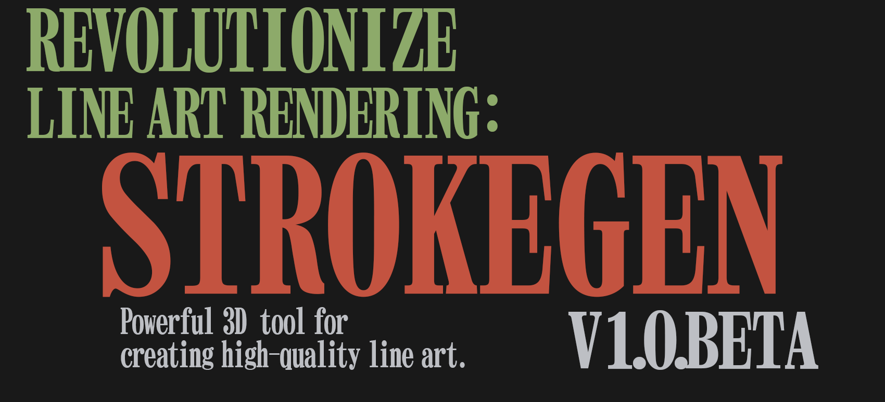

Index
 StrokeGen: a customized Blender build(1) developed by Wangziwei Jiang(2).
{kind=link}
- Why not a plugin? Because the core algorithm requires deep integration with Blender's viewport and GPU modules, which is not possible with a python plugin.
- Who is Wangziwei Jiang? A graphics programmer and 3D artist who is passionate about NPR and has been working on this project for years.
-
Downlads
Beta Releases Stable Releases
-
Tutorials
Features
-
Elegant curve topology
Generate curves with a visually pleasant topology, essential for creating high-quality line art.
-
Real-time response
StrokeGen is designed to provide real-time feedback, allowing you to focus on your art.

-
Driven by Community
Strokegen is still in development, and your feedback is essential to its success.
Join the Discord community to share your thoughts and ideas.
-
Open Source
Strokegen is open-source software, and you can find the source code on GitHub If you are interested in contributing to this project, joint the Discord community and let us know.
Roadmap
StrokeGen is in the beta stage, and the current goal is to improve the stability and user experience. However, there are some exciting features planned for the future:
Improve the flicker of stylized curves. There is already a backbone for this feature, but any further development requires the feedback from the community.
Generate intersection curves for two or more objects. The goal is to implement a GPU-based algorithm for this feature and make it real-time. This feature is still in the research phase.
Implement a diffusion model for interactive cel shading and colorization. This feature is still in the research phase, and I am looking for collaborators to help me with this.